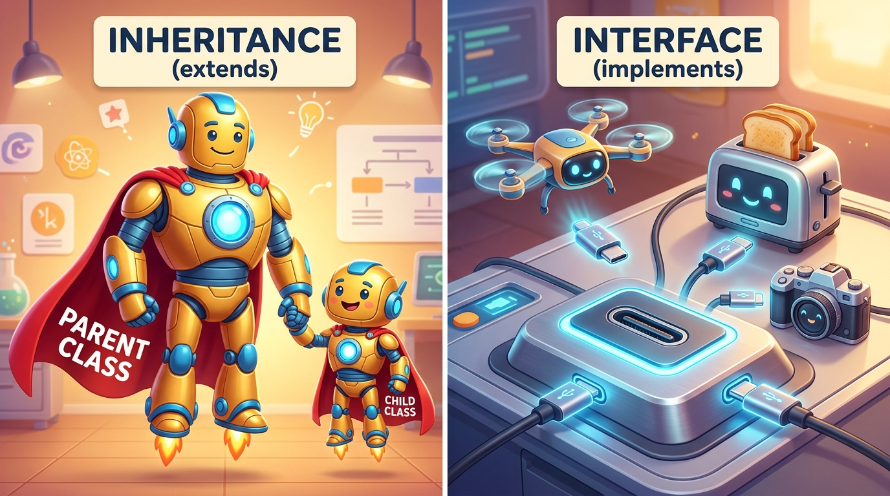

Bridge 6 — Inheritance, Interfaces & Polymorphism (OOP 2)
In professional software architecture, building every class in isolation causes massive code duplication. Through Inheritance (extends), child classes automatically inherit superpowers from parent classes. Through Interfaces (implements), completely unrelated classes plug into standard contracts like USB-C devices. And through Polymorphism, a single line of code can command thousands of distinct objects to perform their own unique actions.
- Construct class hierarchies using Inheritance (
extends) to share common state and behavior. - Invoke parent constructors and superclass methods using the
superkeyword. - Override parent methods with
@Overrideto specialize child behavior while avoiding accidental method hiding. - Contrast when to use an Abstract Class (partial template) versus an Interface (pure contract).
- Explain why Java supports single class inheritance but allows multiple interface implementations.
- Harness Polymorphism to process arrays and collections of diverse subclass objects uniformly through a common parent reference.
Your Learning Roadmap
1. Inheritance: The "IS-A" Relationship
Inheritance allows a new class (the Subclass or Child) to absorb fields and methods
from an existing class (the Superclass or Parent) using the extends keyword.
Always test inheritance with the "IS-A" Rule:
- A
DogIS-AAnimal→ Valid inheritance! - A
ManagerIS-AEmployee→ Valid inheritance! - A
CarIS-AEngine→ FALSE! A car has an engine (Composition), not is an engine!
2. Superhero Inheritance vs. Universal USB-C Interface

3. The super Keyword
When a child class is born, its parent class must be constructed first.
The keyword super allows the child to communicate with its parent:
super(arguments): Calls the parent class constructor (must be the very first line of the child constructor!).super.methodName(): Calls the parent's original version of a method that you may have overridden.
// Parent Class (Superclass)
public class Vehicle {
protected String brand;
public Vehicle(String brand) {
this.brand = brand;
}
}
// Child Class (Subclass)
public class ElectricCar extends Vehicle {
private int batteryCapacity;
public ElectricCar(String brand, int batteryCapacity) {
super(brand); // Must call parent constructor first!
this.batteryCapacity = batteryCapacity;
}
}4. Method Overriding (@Override)
When a subclass provides its own specific implementation of a method already declared in its superclass,
it overrides that method. Always add the @Override annotation so the compiler verifies
you did not make a typo in the method signature:
public class Animal {
public void makeSound() {
System.out.println("Some generic animal sound...");
}
}
public class Dog extends Animal {
@Override
public void makeSound() {
System.out.println("Woof! Woof!"); // Specialized child behavior
}
}5. Abstract Classes: Incomplete Blueprints
What sound does a generic "Animal" or "Shape" make? It has none — only concrete animals or shapes do!
An Abstract Class is a class that cannot be directly instantiated with new.
It serves as a foundational template for subclasses.
- Declared with
public abstract class Shape. - Can declare abstract methods (methods with no body):
public abstract double calculateArea();. - Any non-abstract child class must provide a body for all inherited abstract methods.
6. Interfaces: The Universal Contract
An Interface is a formal contract specifying what methods a class must support, without specifying how they are implemented.
// The Interface Contract
public interface Payable {
double calculatePayment(); // Implicitly public and abstract
}
// A completely different class implementing the contract
public class FreelanceConsultant implements Payable {
private double hours;
private double hourlyRate;
public FreelanceConsultant(double hours, double hourlyRate) {
this.hours = hours;
this.hourlyRate = hourlyRate;
}
@Override
public double calculatePayment() {
return this.hours * this.hourlyRate;
}
}- Use an Abstract Class when classes share common code and state (fields like
id,name) and have a true parent-child identity. - Use an Interface when defining a capability or role (like
Payable,AutoCloseable,Comparable) that can be plugged into completely unrelated classes. - Remember: Java classes can only
extendONE parent class, but canimplementMULTIPLE interfaces!
7. Polymorphism & Dynamic Method Dispatch
Polymorphism comes from Greek meaning "many forms." It means you can refer to a subclass object using its superclass or interface reference type:
public class PolymorphismDemo {
public static void main(String[] args) {
// Polymorphic Array: Holds diverse subclasses under one common parent reference!
Payable[] payroll = new Payable[2];
payroll[0] = new FullTimeEmployee("Sarah", 5000.0);
payroll[1] = new FreelanceConsultant(40, 65.0);
for (Payable worker : payroll) {
// DYNAMIC DISPATCH: Java automatically invokes the child's specific calculatePayment()!
System.out.println("Processing pay: $" + worker.calculatePayment());
}
}
}💻 Interactive Simulator: The Polymorphic Fleet Dispatcher
Command the diverse units below using a single polymorphic interface call:
List<SmartDevice> fleet⚠️ Top 3 Beginner Traps in Inheritance & Interfaces
super() Anywhere Other Than Line 1
public Subclass(String name) {
int x = 10;
super(name); // COMPILER ERROR: call to super must be first statement in constructor!
}The Fix: The parent object must be initialized before the child can touch any variables. super() must always be the very first instruction.
Shape s = new Shape(); // ERROR: Shape is abstract; cannot be instantiated!
Payable p = new Payable(); // ERROR: Payable is an interface; cannot be instantiated!The Fix: You can only instantiate concrete subclasses that implement all required methods: Payable p = new FreelanceConsultant(40, 50);.
📝 Knowledge Check
extends keyword?new keyword. True or False?🛠 Guided Lab: Enterprise Payroll Hierarchy
Payable with one method: double calculateMonthlyPay();.
Employee implements Payable with fields: String id, String name, and constructor.
FullTimeEmployee extends Employee with double annualSalary. Implement calculateMonthlyPay() as annualSalary / 12.
Contractor extends Employee with double hourlyRate and double hoursWorked. Implement calculateMonthlyPay() as hourlyRate * hoursWorked.
PayrollMain test class, create a Payable[] staff array holding both types. Loop through and print the payroll ledger polymorphically!
📺 Recommended Further Study
extends, super and dynamic method dispatch, worked through live.